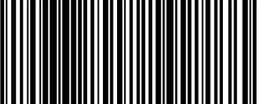
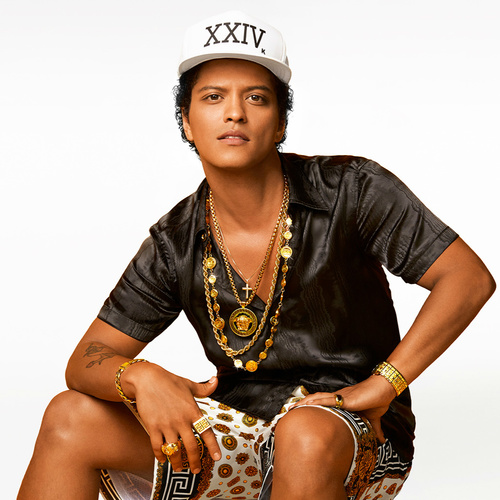
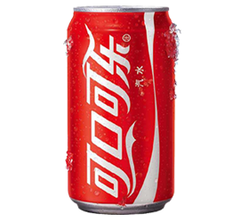

<div style="height:100%;overflow: hidden;">
  <div ng-show="fullfinish==='0'" class="inbound-scanstation" style="background-color: white;width:60%;height:580px">
    <div class="inbound-scan-topbar"><span style="font-weight:600;margin-top:2px;text-align: center;color: white;font-size: 24px;line-height: 50px" id="inboundtitle" class="inboundFont">请选择货位类型</span>
      <kendo-button class="k-primary" ng-disabled="false" style="background-color: yellow;color: blue;float: right;margin-right: 5%;margin-top: 1%" ng-click="startPod()">确定</kendo-button>
    </div>
    <div id="select_bin_grid" style="width:100%;height:81%;margin-top: 30px;overflow:auto">

      <!--<kendo-grid id="select_bin_grid" options="select_GridOptions"></kendo-grid>-->
    </div>
  </div>
  <!--改版后的带input输入框的dialog-->
  <div kendo-window="scanSerialNoWindow" ng-keydown="autoClose($event,this)" id="newtipwindowwithinputer" k-title="'{{'SCAN_GOODS_NUMBER' | translate }}'" k-visible="false" k-modal="true" class="inboundFont">
    <div class="pop_container" style="width:100%;height:100%">
      <div style="width: 100%;height:25%;float: left;text-align: left;line-height: 100%">
        <span id="newtipwindow_span" style="line-height: 1.5;"></span>
      </div>
      
      <input id="newtipwindow_inputer" type="text" ng-model="tipvalue" ng-keydown="receivingscan($event)" style="width:35%;margin-left: 35%;margin-top: 5%;position:relative;float: left;"/>
    </div>
  </div>
  <!--需要释放pod弹窗-->
  <div kendo-window="scanSerialNoWindow" id="releasePodWindow" k-title="'{{'SCAN_GOODS_NUMBER' | translate }}'" k-visible="false" k-modal="true" class="inboundFont">
    <div class="pop_container" style="width:100%;height:100%">
      <div style="width: 100%;height:70%;float: left;text-align: left;line-height: 100%;margin-top: 2%">
        <span id="releasePodSpan" style="margin: auto;width: 100%;height: 30%;float: left;line-height: 1.5">{{sureDnTip}}</span>
        
        <input style="width: 50%;margin-left: 25%;margin-top: 2%" id="sureDn" ng-model="sureDn" ng-keydown="scanDnSureItem($event)"/>
      </div>
      <div style="width: 100%;height:20%;float: left;text-align: center;line-height: 100%">
        <kendo-button id="ok_tip_btn" ng-click="receiving_commonService.CloseWindowByBtn('releasePodWindow');releasePod()" class="k-primary-receiving" style="width: 35%;height: 55%;margin-left: 33%">释放Pod</kendo-button>
      </div>
    </div>
  </div>
  <!-- 一般提示的弹出框 -->
  <div kendo-window="scanSerialNoWindow" ng-keydown="autoClose($event,this)" id="tipwindow" k-title="'{{'SCAN_GOODS_NUMBER' | translate }}'" k-visible="false" k-modal="true" class="inboundFont">
    <div class="pop_container" style="width:100%;height:100%">
      <div style="width: 100%;height:100%;float: left;text-align: left;line-height: 100%">
        <span id="tipwindow_span" style="margin: auto;"></span>
      </div>
    </div>
  </div>
  <div kendo-window="scanSerialNoWindow" id="ok_tipwindow" k-title="'{{'SCAN_GOODS_NUMBER' | translate }}'" k-visible="false" k-modal="true" class="inboundFont">
    <div class="pop_container" style="width:100%;height:100%">
      <div style="width: 100%;height:70%;float: left;text-align: center;line-height: 100%">
        <span id="ok_tipwindow_span" style="margin: auto;"></span>
      </div>
      <div style="width: 100%;height:20%;float: left;text-align: center;line-height: 100%">
        <kendo-button id="ok_tip_btn" ng-click="showChangeStoage(false)" class="k-primary-receiving" style="width: 50%;margin-left: 15%">货筐已满</kendo-button>
      </div>
    </div>
  </div>
  <!-- 带img&ok&cancel的弹出框 -->
  <div kendo-window="scanSerialNoWindow" id="window_img_ok_cancel"  k-visible="false" k-modal="true" class="inboundFont" style="width:100%;height:100%">
    <div style="width:100%;height:80%;text-align: center;">
      <span id="win_content" style="width:100%;height: 20%;text-align: left"></span>
      
    </div>
    <div style="width:100%;height:18%;margin-top: 1%">
      <kendo-button class="k-primary k-button" ng-click="win_receivingok(scancontainerType)" style="width:40%;margin-left: 5%">确定</kendo-button>
      <kendo-button class="k-primary k-button" ng-click="win_receivingcancel(scancontainerType)" style="width:40%;margin-left: 5%">取消</kendo-button>
    </div>
  </div>
  <!-- 更换货筐的弹出框 -->
  <div kendo-window="scanstoragewindow" ng-keydown="autoClose($event,this)" id="scanstoragewindow" k-title="'{{'SCAN_GOODS_NUMBER' | translate }}'" k-visible="false" k-modal="true" class="inboundFont">
    <div class="pop_container" style="width:100%;height:100%">
      <div style="width: 100%;height:37%;float: left;text-align: left;line-height: 100%">
        <span id="inputstoragewindow_span" style="width:100%;height:30%;float: left;font-size: 20px;margin: auto;"></span>
        
        <input style="width: 29%;margin-left: 36%;margin-top:2%;float: left;"  id="window-storage-inputer" ng-keydown="scanOldContainer($event)"/>
      </div>
      <span id="storagewindowtip" style="width:100%;height: 5%;font-size: 20px">当前站台货筐信息:</span>
      <div ng-show="scanstatus==='0'" class="inboundGrid" style="height:55%;width:100%;float: left;text-align: left;margin-top: 2%">
        <kendo-grid id="palletReceivedGRID" options="palletReceivedGridOptions" style="width:80%;height:85%;margin-left: 10%;margin-top: 3%"></kendo-grid>
      </div>
    </div>
  </div>
  <!--带键盘的弹窗-->
  <div kendo-window="scanSerialNoWindow" id="keyboard_window"  k-visible="false" k-modal="true" class="inboundFont" style="width:100%;height:100%">
    <span ng-show="keyboardStatus==='0'" style="width:100%;height: 5%;text-align: center;font-weight: bold;font-size:16px;color: #FF0000;float: left">{{inputer}}输入有误,请重新输入</span>
    <div style="width:40%;height: 80%;float: left;">
      <div style="width:100%;height: 15%;float: left;margin-top: 2%">
        <span style="width: 55%;height: 100%;float: left;line-height: 2;font-weight: bolder">每箱数量</span>
        <input ng-model="everpacknums" ng-keydown="checkReceiveKeBoard($event)" ng-focus="focusmodel=0;numsinputmethod('everpacknums')"  id="everpacknums" style="width: 40%;height: 30px;float: left" type="number"/>
      </div>
      <div style="width:100%;height: 15%;float: left;margin-top: 2%">
        <span style="width: 55%;height: 100%;float: left;line-height: 2;font-weight: bolder">完整层数</span>
        <input id="totallevel" ng-model="totallevel" ng-keydown="checkReceiveKeBoard($event)" ng-focus="focusmodel=1;numsinputmethod('totallevel')" style="width: 40%;height: 30px;float: left" type="number"/>
      </div>
      <div style="width:100%;height: 15%;float: left;margin-top: 2%">
        <span style="width: 55%;height: 100%;float: left;line-height: 2;font-weight: bolder">每层箱数</span>
        <input id="everlevelpacks" ng-model="everlevelpacks" ng-keydown="checkReceiveKeBoard($event)" ng-focus="focusmodel=2;numsinputmethod('everlevelpacks')" style="width: 40%;height: 30px;float: left" type="number"/>
      </div>
      <div style="width:100%;height: 15%;float: left;margin-top: 2%">
        <span style="width: 55%;height: 100%;float: left;line-height: 2;font-weight: bolder">不足一层箱数</span>
        <input id="uncompletepacks" ng-model="uncompletepacks" ng-keydown="checkReceiveKeBoard($event)" ng-focus="focusmodel=3;numsinputmethod('uncompletepacks')" style="width: 40%;height: 30px;float: left" type="number"/>
      </div>
      <div style="width:100%;height: 15%;float: left;margin-top: 2%">
        <span style="width: 55%;height: 100%;float: left;line-height: 2;font-weight: bolder">总数</span>
        <input id="totalnums" disabled  ng-model="totalnums" style="width: 40%;height: 30px;float: left" />
      </div>
    </div>
    <div style="width:60%;height: 80%;float: left;">
      <div id="keyboard_keys" style="width: 100%;height:90%;float: left;">

      </div>
      <div style="width: 100%;height:10%;float: left">
        <kendo-button class="k-primary k-button" ng-click="inputnumfinish()" style="width:30%;margin-top: 5%;margin-left: 15%">确定</kendo-button>
        <kendo-button class="k-primary k-button" ng-click="deletecurrentinput()" style="width:30%;margin-top: 5%;margin-left: 15%">删除</kendo-button>
      </div>
    </div>
  </div>
  <!--带键盘的(收货数量输入)弹窗-->
  <div kendo-window="scanSerialNoWindow" id="damage_keyboard_window"  k-visible="false" k-modal="true" class="inboundFont" style="width:100%;height:100%">
    <div id="damage_keyboard_keys" style="width:80%;height: 50%;margin-left: 10%;margin-right: 10%;float: left;">

    </div>
    <div style="width:100%;height: 15%;float: left;margin-top: 3%">
      <input ng-focus="avatimemethod('keyboard_inputer')" type="number" id="keyboard_inputer" ng-keydown="finish_keyboard(true,$event)" style="width:20%;margin-left: 42%;height: 100%;display:block;background-color: #dca7a7;font-size: 48px;float: left;" />
      <span ng-show="keyboardStatus==='0'" style="width:37%;text-align: center;font-weight: bold;line-height:4;height: 100%;font-size:16px;color: #FF0000;text-align:left;float: left">数量输入有误,请重新输入</span>
    </div>
    <div style="width:100%;height: 20%;float: left">
      <kendo-button class="k-primary k-button" ng-click="finish_keyboard(false)" style="width:30%;margin-top: 5%;margin-left: 37%">{{'SURE'|translate}}</kendo-button>

    </div>
  </div>
  <!--有效期弹窗-->
  <div kendo-window="scanSerialNoWindow" id="avatime_pop_window"  k-visible="false" k-modal="true" class="inboundFont" style="width:100%;height:100%">
    <div style="width:100%;height: 70%;float: left;">
      <div style="width:60%;height: 100%;float: left;">
        <span id="avatime_tip" style="width:100%;height: 15%;font-weight: bold;text-align: left">商品为有效期商品,请输入商品有效期</span>
        
        <span id="avatime_sku_name" style="width:100%;height: 15%;margin-top: 1%;text-align: left;font-size: 18px">Listerine 李施德林 漱口水冰蓝口味500ml*3+80ml(赠品）</span>
      </div>
      <div style="width:37%;height: 100%;margin-left:3%;float: left;">
        <div style="width:100%;height: 20%;float: left;margin-top: 11%">
          <span id="avatime_year_span" style="with:45%">生产年</span>
          <input ng-focus="avatimemethod('avatime_pop_window_madeyear')" id="avatime_pop_window_madeyear" ng-keydown="avaTimeNextFocus($event,'avatime_pop_window_madeyear')" style="width: 40%;margin-left: 15%" type="number"/>
        </div>
        <div style="width:100%;height: 20%;float: left">
          <span id="avatime_mon_span" style="with:45%">生产月</span>
          <input ng-focus="avatimemethod('avatime_pop_window_mademonth')" id="avatime_pop_window_mademonth" ng-keydown="avaTimeNextFocus($event,'avatime_pop_window_mademonth')" style="width: 40%;margin-left: 15%" type="number"/>
        </div>
        <div style="width:100%;height: 20%;float: left">
          <span id="avatime_day_span" style="with:45%">生产日</span>
          <input ng-focus="avatimemethod('avatime_pop_window_madeday')" id="avatime_pop_window_madeday" ng-keydown="avaTimeNextFocus($event,'avatime_pop_window_madeday')" style="width: 40%;margin-left: 15%" type="number"/>
        </div>
        <div  ng-show="avatimevalue==='0'" style="width:100%;height: 20%;float: left">
          <span id="avatime_datelong" style="with:45%">有效期({{TimeType}})</span>
          <input ng-focus="avatimemethod('avatime_pop_window_avatime')" id="avatime_pop_window_avatime" ng-keydown="avaTimeNextFocus($event,'avatime_pop_window_avatime')" style="width: 40%;margin-left: 2%" type="number"/>
        </div>
        <div ng-show="avatime_normal==='0'" style="width:100%;height: 20%;float: left">
          <kendo-button id="avatime_pop_window_ok" ng-click="finish_avatime_keyboard()" class="k-primary" style="width:30%;float: left;margin-left: 10%;">确定</kendo-button>
          <kendo-button id="avatime_pop_window_cancel" ng-click="delete_avavalue()" class="k-primary" style="width:30%;margin-left:10%;float: left;">修改</kendo-button>
        </div>
        <div ng-show="avatime_normal==='1'" style="width:100%;height: 20%;float: left">
          <span style="font-size: 14px;float: left">点击确定,请将商品放回原包装,交给问题处理人员;点击修改重新输入有效期</span>
          <kendo-button id="avatime_pop_window_ok_up" ng-click="avaTimeInNormalOk()" class="k-primary" style="width:30%;float: left;margin-left: 10%;">确定</kendo-button>
          <kendo-button id="avatime_pop_window_cancel_up" ng-click="avaTimeInNormalCancle()" class="k-primary" style="width:30%;margin-left:10%;float: left;">修改</kendo-button>
        </div>
      </div>
    </div>
    <div id="avatime_pop_window_keyboard" style="width:100%;height:30%;float: left;">

    </div>
  </div>
  <!-- 带input扫描的弹出框 -->
  <div kendo-window="scanSerialNoWindow" ng-keydown="autoClose($event,this)" id="scanwindow" k-title="'{{'SCAN_GOODS_NUMBER' | translate }}'" k-visible="false" k-modal="true" class="inboundFont">
    <div class="pop_container" style="width:100%;height:100%;text-align: left">
      <span ng-show="cantSN==='1'" style="width:100%;height: 5%">{{snTip}}</span>
      <div style="width: 70%;height:85%;float: left;text-align: left;line-height: 100%">
        <span id="inputwindow_span" style="width:100%;height:25%;float: left;margin-top: 5%;"></span>
        
        <input style="margin-left:35%;margin-top:5%;float: left;" ng-model="sn"  id="window-receiving-inputer" ng-keydown="windowScan($event)"/>
        <div ng-show="cantSN==='1'" style="width:100%;height: 30%;text-align: left">
          <span style="width:100%;height: 50%;float: left;font-size: 18px;margin-top: 5%">如果均无法扫描,请按登记序列号无法扫描,并将商品放置到待调查货筐中</span>
          <kendo-button class="k-primary-receiving" ng-click="win_serok()" style="width:20%;height:30%;font-size: 18px;margin-left:25%;float:left;color: white;font-weight: 500">{{'SURE'|translate}}</kendo-button>
          <kendo-button ng-click="win_sercancle()" class="k-primary-receiving" style="color: white;width:20%;height:30%;float:left;font-size: 18px;font-weight: 500">{{'CANCEL'|translate}}</kendo-button>
        </div>
      </div>
      <div style="width: 30%;height: 85%;margin: auto;float: left">
        
      </div>
    </div>
  </div>
  <!-- 带input扫描的释放pod弹出框 -->
  <div kendo-window="scanSerialNoWindow" ng-keydown="autoClose($event,this)" id="scanwindowwithpodbtn" k-title="'{{'SCAN_GOODS_NUMBER' | translate }}'" k-visible="false" k-modal="true" class="inboundFont">
    <div class="pop_container" style="width:100%;height:100%">
      <div style="width: 100%;height:80%;float: left;text-align: center">
        <span id="check-bin-inputwindow-span" style="width:100%;height:30%;float: left;margin: auto;"></span>
        
        <input  id="check-bin-receiving-inputer" style="margin-top:2%;margin-left:37%;float: left" ng-model="adviceNo" ng-keydown="sureDN($event)"/>
      </div>
      <div style="width: 100%;height: 20%;margin: auto;float: left">
        <button class="box_shadow_with_radius" ng-click="releasePod()" style="background-color: #00b0ff;color: white;width:30%;margin-left: 33%;font-size: 18px">释放Pod</button>
      </div>
    </div>
  </div>
  <!-- 序列号确认弹出框 -->
  <div kendo-window="scanSerialNoWindow" id="window_img_sno_ok_cancel"  k-visible="false" k-modal="true" class="inboundFont" style="width:100%;height:100%">
    <div style="width:100%;height:80%;text-align: center;">
      <span id="serwindowspan" style="width:100%;height: 20%;text-align: left"></span>
      
    </div>
    <div style="width:100%;height:18%;margin-top: 1%">
      <kendo-button class="k-primary k-button" ng-click="win_serok()" style="width:40%;margin-left: 5%">确定</kendo-button>
      <kendo-button class="k-primary k-button" ng-click="win_sercancle()" style="width:40%;margin-left: 5%">取消</kendo-button>
    </div>
  </div>
  <!--退出工作站，带确定以及取消的一般提示框-->
  <div kendo-window="scanSerialNoWindow" id="window_general_ok_cancel"  k-visible="false" k-modal="true" class="inboundFont" style="width:100%;height:100%">
    <div style="width:100%;height:80%;text-align: center;">
      <span id="general_content" style="width:100%;height: 100%;text-align: left">{{exitStationContent}}</span>
    </div>
    <div ng-show="exitflag==='0'" style="width:100%;height:18%;margin-top: 1%">
      <kendo-button class="k-primary k-button" ng-click="exitStationBefore()" style="width:40%;margin-left: 5%">确定</kendo-button>
      <kendo-button class="k-primary k-button" ng-click="closeGeneralWindow()" style="width:40%;margin-left: 5%">取消</kendo-button>
    </div>
    <div ng-show="exitflag==='1'" style="width:100%;height:18%;margin-top: 1%">
      <kendo-button class="k-primary k-button" ng-click="exitStation()" style="width:40%;margin-left: 5%">确定</kendo-button>
      <kendo-button class="k-primary k-button" ng-click="exitNotFull()" style="width:40%;margin-left: 5%">取消</kendo-button>
    </div>
  </div>
  <!--menu问题菜单-->
  <div kendo-window="scanSerialNoWindow" id="promenu_pop_window" k-visible="false" k-modal="true" class="inboundFont" style="width:100%;height:100%">
    <div class="common-titlebar-with-raduis-shadow-bg" onmouseout="style.backgroundColor='#4775ca'" onmouseover="style.backgroundColor='#5CACEE'" ng-click="goodsDamage()" style="width:70%;height: 10%;;margin-top: 5%;background-color: #4775ca;margin-left: 15%;">
      <span style="text-align: center;display: block;font-size: 24px;font-weight: bold;color: white;line-height: 2.5">1.商品残损</span>
    </div>
    <div class="common-titlebar-with-raduis-shadow-bg" onmouseout="style.backgroundColor='#4775ca'" onmouseover="style.backgroundColor='#5CACEE'" ng-click="showChangeStoage(true)" style="width:70%;height: 10%;;margin-top: 5%;background-color: #4775ca;margin-left: 15%;">
      <span style="text-align: center;display: block;font-size: 24px;font-weight: bold;color: white;line-height: 2.5">2.货筐已满</span>
    </div>
    <div class="common-titlebar-with-raduis-shadow-bg" onmouseout="style.backgroundColor='#4775ca'" onmouseover="style.backgroundColor='#5CACEE'" ng-click="showChartWindow()" style="width:70%;height: 10%;;margin-top: 5%;background-color: #4775ca;margin-left: 15%;">
      <span style="text-align: center;display: block;font-size: 24px;font-weight: bold;color: white;line-height: 2.5">3.信息查询</span>
    </div>
    <div class="common-titlebar-with-raduis-shadow-bg" onmouseout="style.backgroundColor='#4775ca'" onmouseover="style.backgroundColor='#5CACEE'" ng-click="clickReportLight()" style="width:70%;height: 10%;;margin-top: 5%;background-color: #4775ca;margin-left: 15%;">
      <span style="text-align: center;display: block;font-size: 24px;font-weight: bold;color: white;line-height: 2.5">4.报告暗灯</span>
    </div>
  </div>
  <!--暗灯菜单-->
  <div kendo-window="scanSerialNoWindow" id="report_light_pop_window" k-visible="false" k-modal="true" class="inboundFont" style="width:100%;height:100%">
    <div id="report_light_grid" style="width:100%;margin-top: 25px;overflow:auto">

    </div>
    <div id="badStorageState" style="width:100%;height: 25%">
      <span style="width:30%;height: 10%;font-size: 18px;float: left;margin-left: 40%">{{scanbadstorageworn}}</span>
      
      <input id="scan-badstorage-inputer" ng-model="scanbadstorageinputer" type="text" ng-keydown="scanBadStorage($event)" style="float: left;margin-left: 40%;margin-top: 2%"/>
    </div>
  </div>
  <!--扫描货位周边-->
  <div kendo-window="scan_side_window" id="scan_side_window" k-visible="false" k-modal="true" class="inboundFont" style="width:100%;height:100%">
    <div id="scan_side_window_grid"  style="width:100%;height: 30%;;margin-top: 5%;margin-left: 2%;;float: left">
    </div>
    <div id="scan_side_inputer_div"  style="width:100%;height: 40%;;margin-top: 5%;margin-left: 2%;float: left">
      
      <input id="scan-side-inputer" ng-model="scansideinputer" type="text" style="width:20%;margin-left: 40%" ng-keydown="sideStorageScan($event)"/>
    </div>
    <span style="width: 100%;height:5%;float: left;margin-left: 40%;color: red;">{{scansideworn}}</span>
  </div>
  <!-- 带img&ok&cancel的多货弹出框 -->
  <div kendo-window="scanSerialNoWindow" id="window_img_ok_cancel_amount_sku"  k-visible="false" k-modal="true" class="inboundFont" style="width:100%;height:100%">
    <div style="width:100%;height:80%;text-align: center;">
      <div style="width:100%;height: 80%;text-align: left">
        <span id="amountsku_sku" style="width: 100%;height: 10%;float: left;margin-left: 30%"></span>
        <span id="amountsku_skuName" style="width: 100%;height: 10%;float: left;font-size: 14px"></span>
        <span style="width: 20%;height: 10%;float: left;font-size: 14px">DN内总数量:</span><span id="amountsku_dnAmount" style="width: 70%;height: 10%;float: left;font-size: 14px"></span>
        <span style="width: 20%;height: 10%;float: left;font-size: 14px">已收货数量:</span><span id="amountsku_receiveAmount" style="width: 70%;height: 10%;float: left;font-size: 14px"></span>
        <span style="width: 20%;height: 10%;float: left;font-size: 14px">已输入数量:</span><span id="amountsku_inputAmount" style="width: 70%;height: 10%;float: left;font-size: 14px"></span>
        <span style="width: 20%;height: 10%;float: left;font-size: 14px">超出DN数量:</span><span id="amountsku_beyondAmount" style="width: 70%;height: 10%;float: left;font-size: 14px"></span>
        <span style="width: 20%;height: 10%;float: left;font-size: 14px">超出权限数量:</span><span id="amountsku_beyondMaxAmount" style="width: 70%;height: 10%;float: left;font-size: 14px"></span>
        <span id="amountsku_content" style="width: 100%;height: 10%;font-size: 16px;float: left"></span>
      </div>
      
    </div>
    <div ng-show="moregoods==='0'" style="width:100%;height:18%;margin-top: 1%">
      <kendo-button class="k-primary k-button" ng-click="isSureGoodsMore=true;inputnumfinish()" style="width:40%;margin-left: 5%">确定</kendo-button>
      <kendo-button class="k-primary k-button" ng-click="amountCancle('window_img_ok_cancel_amount_sku')" style="width:40%;margin-left: 5%">取消</kendo-button>
    </div>
    <div ng-show="moregoods=='1'" style="width:100%;height:18%;margin-top: 1%">
      <kendo-button class="k-primary k-button" ng-click="close('window_img_ok_cancel_amount_sku')" style="width:40%;margin-left: 5%">确定</kendo-button>
      <kendo-button class="k-primary k-button" ng-click="amountCancle('window_img_ok_cancel_amount_sku')" style="width:40%;margin-left: 5%">取消</kendo-button>
    </div>
  </div>
  <!--图表弹窗-->
  <div kendo-window="scan_side_window" id="chart-window" k-visible="false" k-modal="true" class="inboundFont">
    <div class="demo-section k-content wide" style="width:60%;height: 80%;float: left">
      <div id="chart" style="background: center no-repeat"></div>
    </div>
    <div style="width:35%;height: 80%;float: left;margin-left: 5%">
      <span style="width:95%;height: 10%;margin-left: 5px;float: left;">{{'USER'|translate}}:{{user}}</span>
      <span style="width:95%;height: 10%;margin-left: 5px;float: left;margin-top: 2%">{{'OPERATETIME'|translate}}:{{operateTime}}</span>
      <span style="width:95%;height: 10%;margin-left: 5px;float: left;margin-top: 2%;">{{'OPERATETOTALCOUNT'|translate}}:{{operateTotalCount}}</span>
      <span style="width:95%;height: 10%;margin-left: 5px;float: left;margin-top: 2%;">{{'OPERATEPERCENTAGE'|translate}}:{{operatePercentage}}</span>
      <span style="width:95%;height: 10%;margin-left: 5px;float: left;margin-top: 2%;">{{'GOAL'|translate}}:{{goal}}</span>
      <span style="width:95%;height: 10%;margin-left: 5px;float: left;margin-top: 2%;">{{'ACHIEVED'|translate}}:{{achieved}}</span>
      <span style="width:95%;height: 10%;margin-left: 5px;float: left;margin-top: 2%;">{{'PREPOD'|translate}}:{{prePod}}</span>
      <span style="width:95%;height: 10%;margin-left: 5px;float: left;margin-top: 2%;">{{'PRELOCATION'|translate}}:{{preLocation}}</span>
      <span style="width:95%;height: 10%;margin-left: 5px;float: left;margin-top: 2%;">{{'PREDN'|translate}}:{{preDN}}</span>
    </div>
  </div>
  <!--扫描问题货位窗口-->
  <!--<div kendo-window="scanSerialNoWindow" id="scan_badstorage_window" k-visible="false" k-modal="true" class="inboundFont" style="width:100%;height:100%">-->
    <!--<span>{{scanbadstorageworn}}</span>-->
    <!--<div  style="width:100%;height: 30%;;margin-top: 5%;margin-left: 2%;">-->
      <!---->
      <!--<input id="scan-badstorage-inputer" style="margin-left: 30%;width:35%;float: left;margin-top: 5%" ng-model="scanbadstorageinputer" type="text" ng-keydown="scanBadStorage($event)"/>-->
    <!--</div>-->
  <!--</div>-->
  <!--选择货位类型-->
  <div kendo-window="scanSerialNoWindow" id="showBinType_window" k-visible="false" k-modal="true" class="inboundFont" style="width:100%;height:100%">
    <div style="width:90%;height:10%;float:left;margin-left:5%;">
      <span id="receiving-showbinspan" style="font-size: 18px">工位当前分配Pod总数:{{podTotal}}</span>
      <kendo-button id="receiving-stopassignpod" ng-click="stopAssignPod()" style="margin-left: 2%;background-color: red;color: white;font-size: 16px">{{assignpodinfo}}</kendo-button>
    </div>
    <span style="font-size: 18px;margin-left:5%;">工位当前选中的货位类型:</span>
    <div id="show_bin_grid" style="width:95%;height:70%;margin-top: 30px;overflow:auto;float:left;">

    </div>
    <kendo-button ng-click="startPodInPage()" style="background-color: #3f51b5;color: white;font-size: 16px;width:16%">{{'SURE' | translate}}</kendo-button>
  </div>
  <div ng-show="podstatus==='0'" style="width: 100%;height: 100%">
    <div style="width:100%;height: 5%;float: left;text-align: center">
      <span id="receiving_tip" style="font-weight: bold;font-size: large;width: 100%;height: 100%;color: #2e2e2e;margin: auto;text-align: left">请扫描要上架的pod号码</span>
      <input type="text" id="receiving-inputer"  class="k-textbox" ng-keydown="receivingscan($event)" />
    </div>
    <div class="mushiny-middle" style="width:100%;height:80%;float: left">
      <div class="POD" style="width:25%;margin-left:0.5%;height:100%;float: left;">
        <div  class="titlebar-with-raduis-shadow-bg" style="width:100%;height:71%;float: left;text-align: center">
          <div class="inbound-scan-topbar" style="width:100%;height:8.5%;float: left;">
            <span style="color: white;font-size: 24px;line-height: 150%">{{podInfo}}</span>
          </div>
          <div ng-show="podShow==='1'" style="width:100%;height:80%;float: left;">
            <span style="font-size: 24px;color: #3c3c3c;margin-top: 30%;display: block">等待Pod中...</span>
          </div>
          <div ng-show="podShow==='0'" id="receiving_pod_layout" style="width:100%;height:80%;float: left;">
            <div ng-show="podlayout==='0'" style="width:80%;height: 85%;margin:7.5% auto;padding-left:7.5%;padding-top:7.5%;background-color: white">
              <div id="pallet_storage" style="background-color: #b6b6b6;display: block;width: 90%;height: 90%;color: white;font-size: medium;font-weight: bold">当前货位数量总计:{{stockAmount}}</div>
            </div>
            <div ng-show="podlayout==='1'" style="width:80%;height: 85%;margin:7.5% auto;padding-left:7.5%;padding-top:7.5%;background-color: white">
              <div id="pallet_storage_notg" style="background-color: #b6b6b6;display: block;width: 90%;height: 90%;color: white;font-size: medium;font-weight: bold">
                <!--<div style="width: 50%;height: 50%;margin-left: 25%;margin-top: 10%;background-color: red;border: #000000 1px solid;border-radius: 20px;float: left">-->
                  <!--<span style="color: white">A1</span>-->
                <!--</div>-->
                <span style="float: left;width:100%">当前货位数量总计:{{stockAmount}}</span>
              </div>
            </div>
          </div>
        </div>
        <div style="width:100%;height:34%;margin-top:2%;float: left;">
          <div  style="width:100%;height: 18%;background-color:#4775ca;text-align: center">
            <span style="color: white;font-size: large;font-weight: bold;">货筐</span>
          </div>
          <div class="titlebar-with-shadow-bg" style="width:100%;height: 68%;">
            <div style="float: left;width:30%;height:80%;text-align: center;margin-top: 5%;margin-left: 4%">
              <span class="h-center" style="width:100%;height:30%;margin-top:20%;float: left;font-size: medium;">残品</span>
              <div style="width: 90%;height:40%;margin-left: 5%;margin-right:5%;float: left;background-color: #9b9b9b;text-align: center">
                <span ng-show="scanbadcib==='0'" id="palletscanbadcib" class="receiving-uptopod-label" style="background-color:red ;color: white;display: block;line-height: 3">扫描残品车牌</span>
              </div>
            </div>
            <div style="float: left;width:30%;height:80%;text-align: center;margin-top: 5%">
              <span class="h-center" style="width:100%;height:30%;margin-top:20%;float: left;font-size: medium;">测量</span>
              <div style="width: 90%;height:40%;margin-left: 5%;margin-right:5%;float: left;background-color: #9b9b9b;text-align: center">
                <span ng-show="scanmeasurecib==='0'" id="palletscanmeasurecib" class="receiving-uptopod-label" style="background-color: #ffc106;color: white;display: block;line-height: 3">扫描测量车牌</span>
              </div>
            </div>
            <div style="float: left;width:30%;height:80%;text-align: center;margin-top: 5%">
              <span class="h-center" style="width:100%;height:30%;margin-top:20%;float: left;font-size: medium;">待调查</span>
              <div style="width: 90%;height:40%;margin-left: 5%;margin-right:5%;float: left;background-color: #9b9b9b;text-align: center">
                <span ng-show="scanwaitcib==='0'" id="palletscanwaitcib" class="receiving-uptopod-label" style="background-color: #00b0ff;color: white;display: block;line-height: 3">扫描待调查车牌</span>
              </div>
            </div>
          </div>
        </div>
      </div>
      <div style="width: 73%;height:100%;margin-left:0.5%;float: left;text-align: center">
        <div class="DN" style="width: 100%;height: 30%;">
          <div class="inbound-scan-topbar" style="width:100%;height:21%;float: left;">
            <span style="color: white;font-size: 24px;line-height: 150%">DN号码</span>
          </div>
          <div class="titlebar-with-shadow-bg" style="width: 100%;height: 79%;float: left;">
            <span id="receiving_dn_span" style="color: #000000;width:100%;height: 100%;font-size: 28px;display: block;line-height: 4;"></span>
          </div>
        </div>
        <div class="PRODUCT_INFO" style="width:100%;height:40%;float: left;text-align: center">
          <div class="inbound-scan-topbar" style="width:100%;height:15.8%;float: left;">
            <span style="width:100%;height:100%;color: white;font-size: 24px;line-height: 150%">商品信息</span>
          </div>
          <div class="titlebar-with-shadow-bg" style="width: 100%;height: 84.2%;float: left;">
            <div>
              <span ng-show="product_info_con==='1'" id="product_info_span" style="width:100%;height: 100%;float: left;color: #000000;font-size: 28px;display: block;line-height: 8;"></span>
            </div>
            <div ng-show="product_info_con==='0'" style="width:100%;height: 100%;">
              
              <div style="width:59%;height: 100%;float: left;">
                <span id="product_info_title" style="width:100%;height: 15%;float: left;text-align: left;color: #000000;font-size: 28px;display: block"></span>
                <span id="product_info_text" style="width:100%;height: 83%;text-align: left;float: left;color: #000000;font-size: 18px;display: block;margin-top: 2%"></span>
              </div>
            </div>
          </div>
        </div>
        <div class="STATUS" style="width:100%;height:30%;text-align: center">
          <div class="inbound-scan-topbar" style="width:100%;height:21%;float: left;">
            <span style="color: white;font-size: 24px;line-height: 150%">状态</span>
          </div>
          <div id="status_value" class="titlebar-with-shadow-bg" style="width: 100%;height: 85%;float: left;">
            <span id="receiving_status_span" style="width:100%;height: 100%;color: white;font-size: 28px;display: block">{{receiveStatus}}</span>
          </div>
        </div>
      </div>
    </div>
    <div class="receiving-footer">
      <kendo-button id="receiving-allmode" ng-click="switchMode(true)" class="k-primary-receiving" style="margin-left: 2%;height: 90%">自动释放Pod</kendo-button>
      <kendo-button id="receiving-singlemode" ng-click="switchMode(false)" class="k-primary-receiving">手动释放Pod</kendo-button>
      <kendo-button id="receiving-rebinmenu" class="k-primary-receiving" ng-click="showProMenuWindow()">{{'RE_BIN_MENU'|translate}}</kendo-button>
      <kendo-button id="receiving-sttype" class="k-primary-receiving" ng-click="showBinTypeWindow()" >{{'STORAGE_LOCATION_TYPE'|translate}}</kendo-button>
      <kendo-button id="receiving-finishreceive" class="k-primary-receiving" ng-click="finishReceiveWindow()" >{{'FINISHRECEIVE'|translate}}</kendo-button>
      <kendo-button id="receiving-releasepod" ng-click="releasePod()" class="k-primary-receiving" >{{'RELEASEPOD'|translate}}</kendo-button>
      <kendo-button id="receiving-refreshpod" ng-click="refreshPod()" class="k-primary-receiving" >{{'刷新POD'|translate}}</kendo-button>
  </div>
</div>
</div>